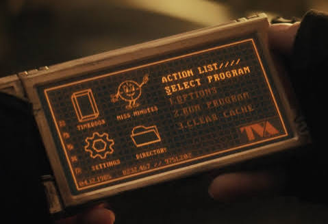
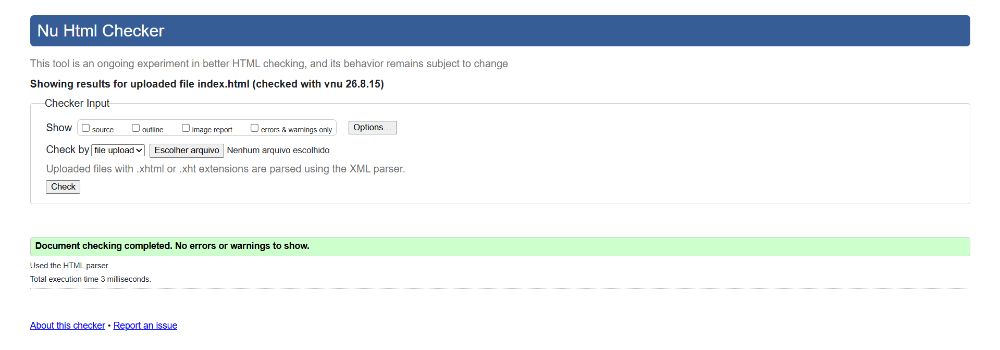

Com o fim dos eventos envolvendo as Joias do Infinito, o Universo Cinematográfico da Marvel inaugurou sua fase mais ambiciosa. Após a morte d'Aquele Que Permanece na Cidadela do Fim dos Tempos, a Linha do Tempo Sagrada ramificou-se descontroladamente, criando infinitas realidades paralelas. Essa ruptura permitiu que variantes de heróis e vilões conhecidos colidissem em escalas antes inimagináveis, redefinindo o conceito de destino e consequências cósmicas.
O principal perigo explorado nesta fase são as incursões: eventos catastróficos em que duas realidades colidem até que um ou ambos os universos sejam completamente aniquilados. Como demonstrado pelo Doutor Estranho e pelas variantes de Kang, o Conquistador, a manipulação inconsequente do tecido dimensional cobra um preço altíssimo. nenhum universo está seguro enquanto as fronteiras da realidade continuarem se desgastando.
O TemPad é o dispositivo oficial de campo da Autoridade de Variância Temporal (TVA), projetado para criar portas temporais instantâneas, monitorar variações na linha do tempo e permitir o trânsito seguro entre diferentes ramificações multiversais.

